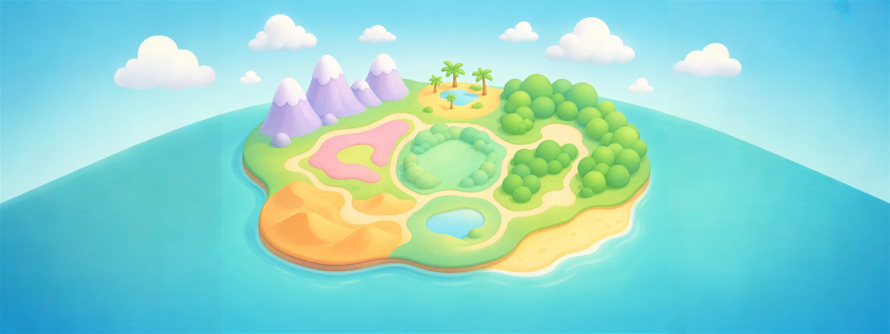

35 د
35 د 3,240
3,240 أكمل من حيث توقفتالأرنب الصادقشاطئ الحكايات · الصفحة 6 من 10
أكمل
أكمل من حيث توقفتالأرنب الصادقشاطئ الحكايات · الصفحة 6 من 10
أكمل

كل الأقسام
كل أماكن عالم أجيال في مكان واحد

أهلاً يا عمر! اختر مكاناً لنبدأ

كل أماكن عالم أجيال في مكان واحد
أهلاً يا عمر! اختر مكاناً لنبدأ
أكمل من حيث توقفتالأرنب الصادقشاطئ الحكايات · الصفحة 6 من 10
أكمل